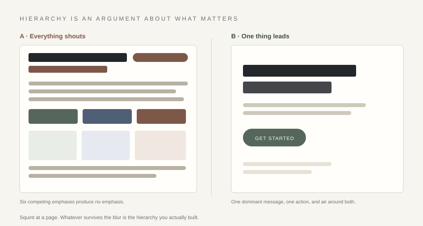

Chapter 06第六章
Noise, Signals, and Trust噪声、信号与信任
A page can be legible and still unreadable. This chapter is about signal-to-noise ratio in visual communication: hierarchy, clutter, charts, and the fragile perception of credibility. 一个页面可以清晰可辨，却依然无法阅读。本章讨论视觉传播中的信噪比：层级、杂乱、图表，以及脆弱的可信度感知。
Clarity is subtractive. Every element you add competes with every element already there. Hierarchy is how you tell the eye what the page believes is important. Charts and polish can inform or mislead, often with the same pixels. Trust is built by predictable behavior, not by decoration. 清晰是做减法。你每增加一个元素，它都在与已有元素竞争。层级，是你告诉眼睛“这个页面认为什么重要”的方式。图表与精致感既能提供信息，也能误导，常常用的是同一批像素。信任由可预测的行为建立，而不是由装饰建立。
Clutter is a cost杂乱是一种成本
Visual search slows as the number of distractors grows. This is one of the most reliable findings in perception research: finding a target among similar items takes longer than finding it among dissimilar ones, and more items make it worse. A busy page taxes the same machinery that a clean page leaves free for the task. 随着干扰项增多，视觉搜索会变慢。这是知觉研究中最稳健的发现之一：在相似项目中找目标，比在差异明显的项目中找更慢；项目越多，越糟。杂乱的页面消耗的，正是干净页面留给任务的同一套机制。
Choice has a cost too. Hick's law describes how reaction time grows with the logarithm of the number of alternatives. The law is about simple choice tasks, not the full richness of human decisions, but the direction is useful: more options usually mean slower commitment. 选择也有成本。希克定律描述了反应时间如何随备选数量的对数增长。这条定律针对的是简单选择任务，而不是人类决策的全部丰富性，但方向是有用的：更多选项通常意味着更慢的承诺。
Whitespace is not empty space. It is grouping, pacing, and emphasis. The Gestalt principles—proximity, similarity, closure, common region—describe how the visual system invents structure from arrangement. Space is one of the cheapest and most powerful of those arrangements. 留白不是空无一物。它是分组、节奏与强调。格式塔原则——接近、相似、闭合、共同区域——描述了视觉系统如何从排列中发明结构。空间，是这些排列中最廉价也最有力的手段之一。
Hierarchy is an argument层级是一种论证
Hierarchy is the claim that some things matter more than others. It is built from size, weight, color, position, and space. A page with no hierarchy is not neutral; it is an argument that everything matters equally, which is almost never true. 层级是在主张：有些东西比其他东西更重要。它由大小、粗细、颜色、位置与空间构成。没有层级的页面并不中立；它是在主张“一切都同等重要”，而这几乎从来不成立。
The squint test is crude and effective: blur your vision until the text is unreadable. Whatever remains visible is the hierarchy you actually built. If the loudest shape is a cookie banner, that is the message the page is sending, regardless of the headline. 眯眼测试粗糙而有效：把视线模糊到文字无法辨认。仍然可见的东西，就是你实际建立的层级。如果最响亮的形状是一个 Cookie 弹窗，那么无论标题写了什么，那才是页面真正发出的信息。
One primary action is a hierarchy decision, not a brand preference. If two buttons are equally loud, the user must do the work of deciding which one the page prefers—work that the page should have done. “一个主行动”是层级决策，而不是品牌偏好。如果两个按钮同样响亮，用户就必须替页面做“页面更喜欢哪一个”的工作——而这本该由页面完成。

Data visualization as perception数据可视化作为知觉
Charts are perceptual arguments. Edward Tufte's “lie factor” compares the size of an effect shown in a graphic with the size of the effect in the data. A bar that is twice as tall for a value that is 10% larger is not a stylistic choice; it is a false statement. 图表是知觉性的论证。爱德华·塔夫特的“谎言因子”，比较的是图形中展示的效应大小与数据中真实效应大小的比例。一个数值只大 10%，柱子却高出一倍，这不是风格选择，而是一个虚假陈述。
Truncated axes are the most common form of chart distortion. Starting a bar chart at 90 instead of zero exaggerates small differences into dramatic ones. The chart may be technically accurate and still perceptually dishonest, because readers compare areas and lengths, not numbers. 截断坐标轴是最常见的图表失真形式。柱状图从 90 而不是 0 开始，会把微小差异放大成戏剧性差异。图表可能在技术上准确，却在知觉上不诚实，因为读者比较的是面积与长度，而不是数字。
Encoding matters too. Area is harder to judge than length; angle is harder still; rainbow color scales create false boundaries and are inaccessible to many readers. The best chart is usually the one that makes the comparison obvious before the labels are read. 编码方式也很重要。面积比长度更难判断；角度更难；彩虹色阶会制造虚假边界，并且对许多读者不可访问。最好的图表，通常是在读标签之前，就已经让比较关系显而易见的那一个。
Trust is a visual judgment信任是一种视觉判断
People form impressions of a page very quickly. Lindgaard and colleagues (2006) found that visual appeal judgments could be made after exposures as brief as 50 milliseconds, and that those snap judgments correlated with later evaluations. The first impression is not the whole story, but it is the gate. 人们会非常快速地形成对页面的印象。Lindgaard 及其同事（2006）发现，视觉吸引力判断可以在短至 50 毫秒的曝光后作出，而这些瞬间判断与后续评价相关。第一印象不是全部，但它是入口。
The aesthetic–usability effect describes the tendency to judge attractive interfaces as more usable. The halo is real, and it cuts both ways: a polished page can make a weak product feel trustworthy, and an unpolished page can make a strong product feel risky. 审美—可用性效应，描述的是人们倾向于把好看的界面判断为更好用。这种光环真实存在，而且双向作用：精致的页面可以让弱产品显得可信，粗糙的页面也可以让强产品显得有风险。
Credibility cues are not only aesthetic. Clear authorship, real contact information, visible sources, consistent behavior, and honest error states all contribute. Trust is calibrated over time; a single polished landing page cannot substitute for a history of doing what you said. 可信度线索不只是审美性的。清晰的作者信息、真实的联系方式、可见的来源、一致的行为、诚实的错误状态，都会有所贡献。信任是随时间校准的；一个精致的落地页，无法替代“说到做到”的历史。
Designing for honest clarity为诚实的清晰而设计
Honest clarity has three habits. Show the source, so the reader can check. Show uncertainty, so the reader can calibrate. And show the trade-off, so the reader can choose. A number without a source is decoration; a chart without a baseline is rhetoric. 诚实的清晰有三个习惯。展示来源，让读者可以核查；展示不确定性，让读者可以校准；展示取舍，让读者可以选择。没有来源的数字是装饰；没有基线的图表是修辞。
Redundancy helps here: color plus label, shape plus position, summary plus detail. It is not inelegant to say the same thing twice in two channels; it is how you make sure the message survives a small screen, a color deficiency, or a distracted reader. 冗余在这里有帮助：颜色加标签、形状加位置、摘要加细节。用两个通道说同一件事并不笨拙；这正是让信息在小小屏幕、色觉缺陷或分心读者面前依然存活的方法。
The 50-millisecond first-impression finding is striking but should be read carefully: the judgments were about visual appeal, not about truth or usability, and the stimuli were carefully controlled. The aesthetic–usability effect has been replicated across cultures, but its size varies. Chart distortion research is more direct: readers reliably infer magnitude from visual area and length, which is why truncated axes mislead even when the numbers are printed. “50 毫秒第一印象”这一发现很醒目，但需要谨慎解读：判断对象是视觉吸引力，而不是真实性或可用性，且刺激经过精心控制。审美—可用性效应已在不同文化中被重复，但效应大小有差异。图表失真的研究更直接：读者确实会从视觉面积与长度推断大小，这就是为什么即便数字印在旁边，截断坐标轴仍会误导。
Squint at a page until the text disappears. Name the three shapes that survive. If they are not the three things the page wants you to understand, the hierarchy is doing something other than its job. 眯眼看一个页面，直到文字消失。说出仍然存活的三个形状。如果它们不是页面最想让你理解的三件事，那么层级正在做的，就不是它该做的工作。
- Clarity is subtractive; clutter is a tax on every task.清晰是做减法；杂乱是对每一项任务的征税。
- Hierarchy encodes priority whether you design it or not.无论你是否设计，层级都在编码优先级。
- Charts persuade through perception before they inform through numbers.图表先通过知觉说服，再通过数字告知。
- Trust is calibrated by behavior; polish only opens the door.信任由行为校准；精致只是打开门。
- Tufte, E. R. (2001). The Visual Display of Quantitative Information (2nd ed.). Graphics Press.
- Sweller, J. (1988). Cognitive load during problem solving: Effects on learning. Cognitive Science, 12(2), 257–285.
- Hick, W. E. (1952). On the rate of gain of information. Quarterly Journal of Experimental Psychology, 4(1), 11–26.
- Lindgaard, G., Fernandes, G., Dudek, C., & Brown, J. (2006). Attention web designers: You have 50 milliseconds to make a good first impression! Behaviour & Information Technology, 25(2), 115–126.
- Kurosu, M., & Kashimura, K. (1995). Apparent usability vs. actual usability. CHI '95.
- Fogg, B. J., et al. (2001). What Makes a Web Site Credible? Stanford Web Credibility Project.